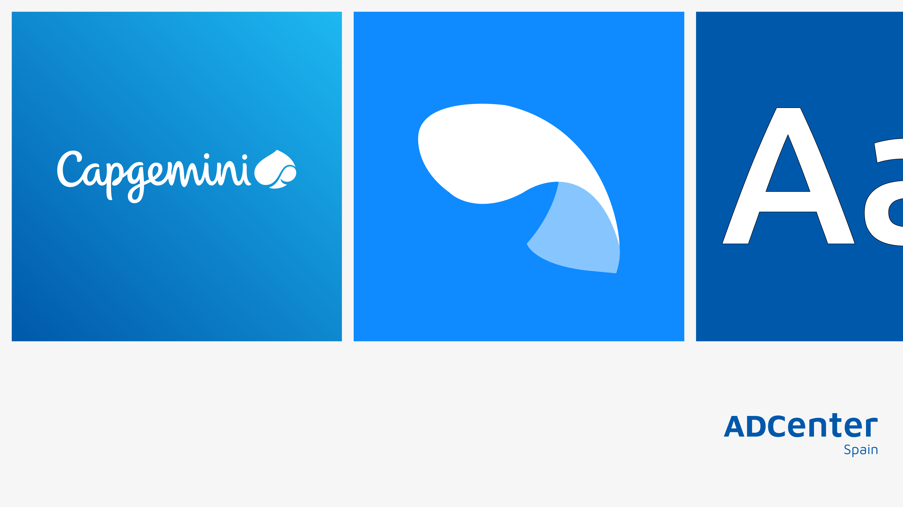
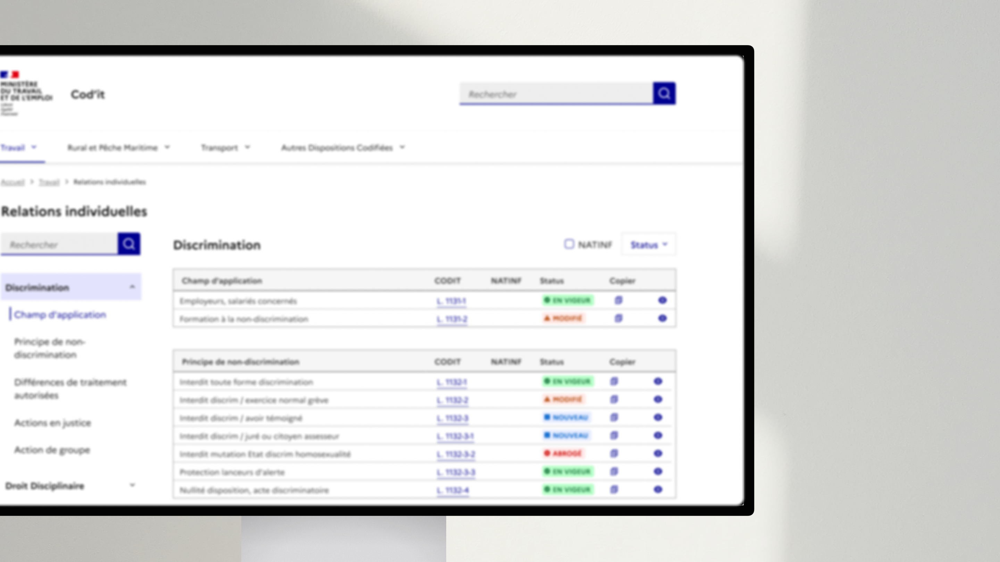
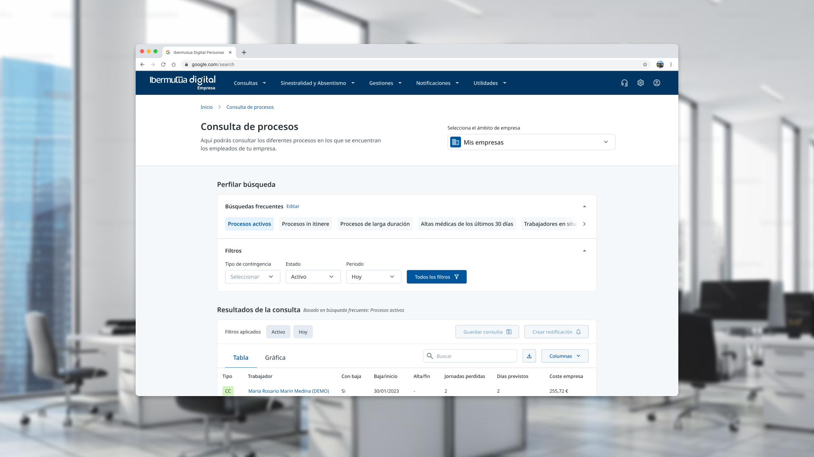
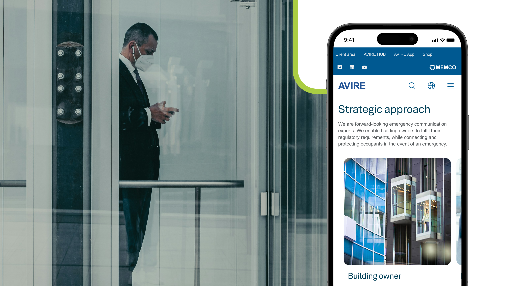
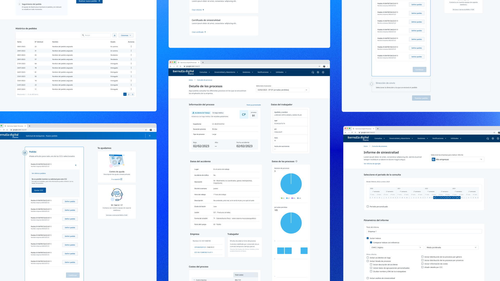
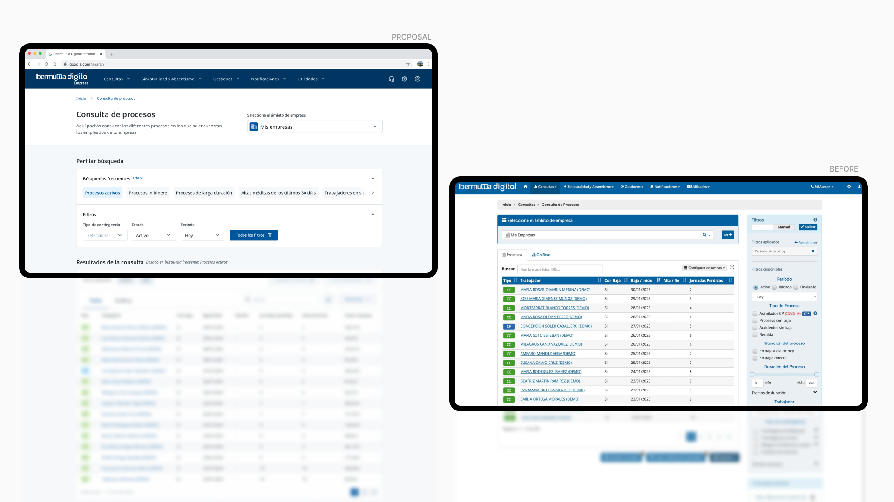
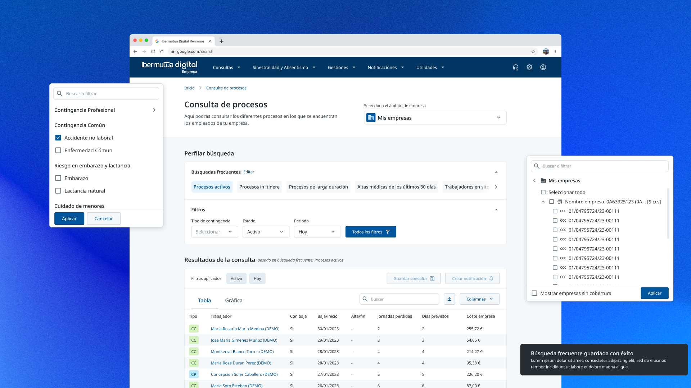

This project contains confidential client information. Enter the password to access it.
If you want to know more about this project, please contact me, and I'll answer you as soon as possible.
Product Designer — Based in Spain
Valeria Lamicq
Designing clarity into the products that need it most — enterprise tools, public services, and platforms built for scale. I thrive where things are complex.
Selected Work4 projects

01
ADCenter Design System
↗
Design SystemsAccessibilityEnterprise
Building a shared language between design and development — from fragmented UI to a unified system adopted across 5 products.

02
ConfidentialEnter password to access
DNUM – Cod'IT Accessibility Audit
Protected
AccessibilityGovernmentWCAG / RGAA
Leading an accessibility audit and redesign strategy for the French Ministry of Labor — in one month, solo.

03
ConfidentialEnter password to access
Ibermutua Digital Empresas
Protected
Enterprise SaaSDataUX Strategy
Redesigning an enterprise data platform so HR professionals could stop fighting the interface and start making decisions.

04
Avire – Global Digital Presence
↗
GlobalB2BMobile-First
Unifying a fragmented global website into one scalable platform that serves engineers, consultants, and building managers across markets.
Bringing clarity to complex systems.
I'm a Product Designer based in Spain with a background spanning product design, design systems, accessibility, and more than a decade of visual and brand design.
Throughout my career, I've been drawn to products that operate in complex environments — enterprise platforms, public services, and highly-regulated industries where users need clarity, confidence, and trust to get things done. I enjoy turning that complexity into experiences that feel intuitive, scalable, and genuinely useful.
Over the years, I've led end-to-end product initiatives, influenced product strategy, and driven design system adoption across multidisciplinary teams. Most recently at Capgemini, I led the creation and standardisation of the design system that established a shared design language across teams, while also contributing to product decisions and promoting DesignOps practices that strengthened collaboration between design, product, and engineering stakeholders.
I work best at the intersection of product thinking, systems thinking, and execution. Whether defining product direction, improving an existing experience, or building the foundations that allow teams to scale, I focus on creating alignment — between business goals, user needs, and technical realities.
Before moving into product design, I spent over a decade working in graphic and brand design in both Mexico and Spain. That experience continues to shape my work today, giving me a strong appreciation for communication, visual hierarchy, and the role design plays in building trust.
Accessibility is a natural part of my process rather than an afterthought. I've worked extensively with WCAG standards, and I believe the best solutions are often the ones that work well for the broadest range of people.
Having worked on projects in Mexico, Spain, France, and The Netherlands, my experience collaborating with international teams, navigating different organisational cultures, and designing for diverse audiences is an asset. My drive is solving meaningful problems, helping teams work better together, and creating products that make complexity feel simple.
Toolkit
From research to components, accessibility to analytics — the tools below reflect how I work: methodically, at scale, and with a bias toward things that last.
Design & Prototyping
Figma
Framer
ProtoPie
Adobe Photoshop
Adobe Illustrator
After Effects
Research & Testing
Maze
FigJam
Miro
User interviews
Heuristic review
Accessibility
Stark
AXE
WAVE
IBM Accessibility Checker
NVDA / VoiceOver
Analytics
Google Analytics
Hotjar
Design Systems & Collaboration
Figma Variables & Tokens
Notion
Jira
GitHub
AI & Productivity
Claude
ChatGPT
GitHub Copilot
Standards & Frameworks
WCAG 2.1 AA
RGAA v4.1
Atomic Design
Design Ops
Agile / Scrum
Human Interface Guidelines
Get in touch
Good work starts with a conversation.
Whether you have a brief, a problem you're trying to untangle, or just want to see if we're a good fit — my inbox is a good place to start.
ADCenter Design System: Building a Shared Language Between Design and Development
Transforming a fragmented UI landscape into a unified design system — reducing design time by 50%, achieving 89% AA accessibility compliance, and driving adoption across every internal product.
Lead Product Designer
UX/UI Designers, Development Team
Figma, Notion
Ongoing (launched late 2023)
3–5 internal products
The Challenge
When I joined ADCenter Spain, there was no design system. There was a style guide — outdated, ungoverned, and largely ignored. Each product had its own visual language: buttons varied in shape and behavior, navigation patterns conflicted across tools, and accessibility was inconsistent. Designers worked from instinct, developers rebuilt components from scratch for every project, and the disconnect was visible to users.
This wasn't just a visual consistency problem — it was a scalability bottleneck. Every new product meant reinventing the UI from zero. Every update meant touching multiple codebases manually. And the lack of shared standards meant quality depended entirely on whoever happened to be building that particular feature.
I recognized the opportunity early and made the case for building a design system. The goal wasn't just a component library — it was to create a shared language between design and development that would reduce waste, improve quality, and let teams move faster with confidence.
Understanding the Problem
Before building anything, I ran workshops and interviews across design, development, and product teams to understand why fragmentation had taken root in the first place.
The old style guide had no governance — no one owned it, no one updated it, and no one enforced it. Designers and developers worked in silos, frequently duplicating effort without realizing it. The development teams used different frameworks (Angular and React), which meant even when a component was built well in one codebase, it had to be rebuilt differently in the other. And there were no accessibility standards — compliance was accidental at best.
The core insight was that the problem wasn't missing components — it was missing alignment. People, process, and tools were all disconnected. A component library alone wouldn't fix that; it needed structure, documentation, and governance to sustain itself.
Scoping V1: What to Build First
This is where a design system initiative can easily go wrong — trying to build everything at once. I deliberately scoped V1 as an MVP focused on the components used most frequently across our internal tools.
What V1 included
Foundations — Color tokens, typography scale, spacing system, grid, and interaction states. Built as design tokens so they could sync with both Angular and React codebases.
Core components — Buttons, inputs, modals, alerts, navigation elements — the building blocks that appeared in every product. Each one documented with usage guidelines and do's and don'ts.
Documentation — Every element included rationale, not just specs. The goal was that any team member — designer, developer, or PM — could understand not just how to use a component, but why it was designed that way.
What I deliberately left out of V1
Complex UI patterns (data tables, dashboards, charts) — these would come later once the foundation was stable and adopted.
Full developer tooling — V1 focused on design-side adoption first. Storybook integration and web component development were planned as next phases.
100% accessibility compliance — we targeted AA for core components (achieved 89%) with a roadmap to reach full compliance over time.
The reasoning was simple: ship a focused, well-documented foundation that teams could start using immediately, then iterate based on real adoption feedback. A design system is a living product — trying to launch it "complete" would have meant launching it never.
Building Adoption
A design system only works if people actually use it. I treated adoption as a product problem, not a mandate.
The developer resistance story
Initially, the development team was skeptical. They'd seen style guides before — documents that created overhead without reducing their workload. Their concern was understandable: they feared the DS would add complexity to their process, not simplify it.
Rather than pushing adoption top-down, I focused on documentation quality. I made sure every component was documented simply and efficiently — not design theory, but practical implementation guidance that helped developers do their jobs faster. The turning point came when developers saw that well-documented, reusable components actually eliminated the rebuild cycle they'd been stuck in. Once they experienced the time savings firsthand, resistance disappeared.
Rituals that sustained momentum
Weekly cross-functional syncs — short sessions to surface blockers, review new components, and align on priorities. These became the heartbeat of the DS.
Open backlog in Notion — full transparency on what was being built, what was next, and why. Anyone could propose additions or flag issues.
Design team reviews — weekly calls to address DS questions, check for adoption blockers, and ensure alignment across designers.
Governance: Making It Last
A design system without governance becomes another abandoned style guide. I established a contribution and evolution model from the start.
Contribution flow: Anyone could propose a new component or modification. Proposals went through a review process — is it needed across multiple products? Does it meet accessibility standards? Is it documented? — before being merged into the system.
Iteration cadence: The DS evolved through continuous feedback loops, not big-bang releases. Weekly syncs surfaced what was working and what wasn't, and the Notion backlog kept priorities visible and transparent.
Ownership model: While I led the initiative, the goal was shared ownership. Designers contributed patterns they'd validated in their products, developers flagged implementation gaps, and the DS reflected the collective needs of the teams using it.
Impact
Within the first three months:
Metric
Before
After
Impact
Design time for new products
Baseline
50% reduction
Designers started from components, not blank canvases
Component reuse (design team)
Inconsistent
100% adoption
Every internal product uses the DS
Developer integration time
~6 hrs per component
~3 hrs
50% faster implementation
Accessibility compliance
No standard
89% AA
Inclusive by default, with a roadmap to 100%
DS-related support questions
Frequent
Significantly reduced
Documentation answered most questions before they were asked
The DS is currently adopted across 3–5 internal products and continues to evolve. The web component library is under development to enable full cross-framework compatibility between Angular and React.
Reflections
Start with what teams use most, not what looks impressive. The temptation with a design system is to build the flashiest components first. The reality is that getting buttons, inputs, and spacing right — and documenting them well — has more impact on daily workflow than any complex pattern.
Documentation is the product. The components themselves are important, but what made adoption stick was the documentation. When a developer can find the answer without asking someone, you've reduced friction at scale.
Resistance is feedback, not opposition. The initial developer skepticism wasn't a problem to overcome — it was a signal about what they needed. They didn't want more design rules; they wanted tools that made their work easier. Listening to that shaped how I built and documented everything.
Governance defines whether a DS lives or dies. Building components is the visible work. Establishing how they evolve, who contributes, and how decisions get made is the work that determines whether the system is still relevant in a year.
Next case study
Password protected
DNUM – Cod'IT Accessibility Audit
Leading an accessibility audit and redesign strategy for the French Ministry of Labor — in one month, solo.
→
← Back to work
DNUM – Cod'IT: Accessibility Audit for the French Ministry of Labor
A comprehensive accessibility audit and redesign strategy for a government labor law platform — delivering RGAA-compliant proposals that the Ministry adopted as the blueprint for remediation, in one month, solo.
Product Designer & Accessibility Specialist
Solo (stakeholder collaboration)
Figma, AXE, WAVE, IBM Checker, Silktide, NVDA, VoiceOver
1 month
French Ministry of Labor — DNUM
The Challenge
Cod'IT is the French government's digital platform for codified labor law — used by government inspectors and citizens to access legal provisions that govern workplace regulations across France. It's an essential public service tool.
The problem: the platform was failing the people it was meant to serve. Navigation was deeply nested (7+ levels), search results were unstructured and often irrelevant, contrast was insufficient, and assistive technology support was broken. For users relying on screen readers, the platform was effectively inaccessible.
This wasn't just a usability issue — it was a compliance risk. The French government's RGAA accessibility framework (aligned with WCAG 2.1 AA) requires public-sector digital services to meet specific inclusion standards. Cod'IT fell significantly short.
I was brought in to lead the accessibility audit and deliver a redesign strategy that would bring the platform into compliance while fundamentally improving the experience for all users — not just those with disabilities.
The constraint that shaped the work: I had one month. Every decision about scope, prioritization, and depth had to be deliberate. There was no room for broad exploration — I needed to identify the highest-impact issues, propose actionable solutions, and deliver a complete audit report and design proposals the Ministry could implement immediately.
Audit Approach
I designed a four-layer audit methodology to ensure comprehensive coverage within the compressed timeline:
1. Automated testing
Used AXE, WAVE, IBM Accessibility Checker, and Silktide to surface color contrast failures, missing alt text, and ARIA role violations across the platform. This established a quantitative baseline quickly.
2. Manual screen reader testing
Navigated the full platform using NVDA and VoiceOver to evaluate real-world assistive technology compatibility. Automated tools catch structural issues; manual testing reveals how the experience actually feels for someone using a screen reader.
3. Heuristic review
Evaluated the platform's information architecture, visual hierarchy, and interaction patterns against WCAG 2.1 AA criteria and RGAA v4.1 standards.
4. Stakeholder interviews
Spoke with government inspectors and digital policy managers to understand which tasks were most critical and where friction was highest. This ensured the audit prioritized issues by real-world impact, not just technical severity.
Key Findings
The audit revealed issues across five areas, listed in priority order — based on how many users were affected and how severely each issue blocked critical tasks:
1. Information architecture (highest priority)
Content was buried under 7+ levels of nested navigation with no breadcrumbs or orientation cues. This affected every user on every visit. Even experienced inspectors struggled to locate the legal provisions they needed. Fixing this had the broadest impact.
2. Search experience
Results were unfiltered and poorly structured. Users searching for specific legal articles had to scan through irrelevant content, leading to high frustration and low completion rates. Since search was the primary way inspectors accessed legal provisions, this was second priority.
3. Accessibility violations
Missing form labels, insufficient contrast ratios, and absent focus indicators meant screen readers couldn't interpret core content. Users relying on keyboard navigation had no visible indication of where they were on the page.
4. Assistive technology gaps
Missing ARIA roles, unlabeled inputs, and absent semantic HTML made screen reader navigation effectively impossible for critical workflows.
5. Design inconsistency
Typography, spacing, and UI elements varied across pages, increasing cognitive load and undermining trust. While less urgent than the structural issues, this contributed to the overall experience of confusion and unreliability.
Design Strategy & Proposals
I prioritized fixes using a severity-times-impact framework: issues that affected the most users and blocked the most critical tasks were addressed first. Navigation and search improvements took priority over visual polish.
Information architecture overhaul
The 7-layer navigation was restructured to 3 levels, organized around critical tasks rather than internal content taxonomy. I added breadcrumbs and clear section labels so users always knew where they were and how to get back.
Homepage redesign
I redesigned the homepage around three primary user tasks: search, access documentation, and view recent updates. Applied AA-level contrast throughout and reduced scrolling depth significantly by eliminating redundant content blocks and tightening the visual hierarchy.
Search redesign
Restructured search results with a clear hierarchy: title, excerpt, metadata. Added filtering capabilities and implemented ARIA live regions so screen reader users would receive real-time feedback as results updated.
Accessible component specifications
Built a set of accessible component specs in Figma — buttons, forms, typographic styles — all designed to RGAA standards with proper focus states, semantic HTML annotations, and accessible color tokens. These served as a reference for the development team's implementation.
Outcome
The Ministry adopted my recommendations as the blueprint for Cod'IT's accessibility remediation. The audit report and design proposals I delivered shaped the direction of the platform's redesign. While I wasn't involved in the implementation phase, the deliverables were designed to be actionable — every recommendation included priority level, expected impact, and specific design specs the development team could build from.
What changed
Navigation efficiency — Reducing the navigation depth from 7 levels to 3 meant inspectors could reach legal provisions roughly 30% faster based on task-based testing during the audit.
RGAA compliance — The audit identified the specific violations preventing compliance, and the redesign proposals were designed to bring the platform to near-AA level.
Search relevance — The restructured results and filtering capabilities directly addressed the primary frustration users reported in interviews.
Scrolling depth — Reduced by an estimated 40% on key pages, making content more immediately accessible on all screen sizes.
Beyond the platform
Alongside the audit report, I delivered the four-layer methodology itself as a documented, replicable framework — not just the findings, but the process for producing them. This gave the Ministry a tool they could apply to future accessibility audits across other government digital services, rather than depending on external specialists for every evaluation.
Reflections
One month forced clarity. The compressed timeline was actually a design advantage — it eliminated the temptation to audit everything and forced me to prioritize ruthlessly by impact. Every hour spent had to justify itself against the question: "Will this recommendation make the biggest difference for the most users?"
Accessibility improves usability for everyone. Every accessibility improvement — clearer hierarchy, better contrast, simpler navigation — also made the platform faster and easier for sighted, able-bodied users. The business case for accessibility was proven through the work itself.
Working across languages builds a specific kind of adaptability. Conducting the audit and writing the deliverables in French sharpened my communication — when you can't rely on your native language, you learn to be more precise and deliberate in how you present findings and recommendations.
Solo ownership at this scope requires discipline. Without a team to distribute tasks, I had to be both strategist and executor — defining the methodology, running the audit, synthesizing findings, designing solutions, and presenting to stakeholders. The experience reinforced that senior-level autonomy isn't about working alone; it's about knowing how to structure your own work so that every piece connects to the larger goal.
Next case study
Avire – Global Digital Presence
Unifying a fragmented global website into one scalable platform that serves engineers, consultants, and building managers across markets.
→
← Back to work
Ibermutua Digital Empresas: Redesigning Data into Decisions
Redesigning a dense enterprise data platform so HR professionals and business administrators could retrieve insights and make decisions with confidence — not fight the interface to get there.
Product Designer (UX/UI)
Product Manager, Development Team
Figma
6 months
Workplace Health & Safety / Enterprise SaaS

The Challenge
Ibermutua is a leading Workplace Health and Safety organization in Spain, operating in collaboration with the national Social Security system. Their platform Digital Empresas served thousands of HR professionals, business administrators, and third-party advisors — all tracking workplace incidents, absenteeism, and risk prevention data daily.
Despite being critical to daily operations, the platform was failing its users. Cluttered filters buried under flat menus, no way to save frequent searches, constant disorientation when switching between company datasets, and information presented without hierarchy. Users had all the data they needed — they just couldn't get to it efficiently.
The business goal was clear: transform a rigid, data-heavy portal into a tool that let professionals retrieve insights and make decisions with confidence — while aligning the experience with Ibermutua's evolving design system.
Research & Discovery
The discovery phase involved interviews with the platform's three core user groups:
HR Departments
Tracked absenteeism, workplace incidents, and compliance data daily. They needed speed and repeatability — the same searches, run the same way, every week.
Business Administrators
Focused on financial impact and reporting. They needed clear data hierarchy and the ability to drill into specifics without losing context.
Third-Party Advisors
Consulting firms managing multiple client companies simultaneously. They were the most disoriented users — constantly switching datasets and losing track of which company's data they were viewing.
What the research revealed
Five patterns emerged consistently:
Repetitive workflows: Users rebuilt the same searches from scratch daily. There was no way to save or reuse filter configurations.
Filter overload: All filters were presented with equal weight — no distinction between commonly used fields and advanced options.
Context loss: When managing multiple companies, users frequently lost track of whose data they were analyzing.
Information density without hierarchy: Tables displayed everything at once with no visual prioritization.
No alert capability: Users wanted to be notified when specific conditions were met, but the system offered no notification features.
Defining the Problem
How might we simplify data retrieval and maintain user orientation so businesses can act on their data faster and with more confidence?
I translated research findings into four strategic design objectives:
Objective
Design Approach
Expected Outcome
Reduce search friction
Separate common vs. advanced filters using progressive disclosure
Faster, less overwhelming search experience
Enable workflow reusability
Introduce saved and favorite searches
Eliminate daily repetition
Maintain user orientation
Persistent company identifier in header + breadcrumbs
Prevent context loss across views
Support varied expertise levels
Collapsible panels + compact/detailed view toggle
Reduce cognitive load without sacrificing depth
Design Process
Navigating 16 iterations
This wasn't a linear path from wireframe to final design. We explored 16 distinct iterations of the filtering and data retrieval system, each tested and refined based on usability feedback and stakeholder input.
A key challenge throughout was managing scope. Stakeholders frequently introduced new requirements mid-process, and some team members joined late without full context, which created misalignment. To address this, I established a structured argumentation framework for design decisions — every proposed change had to be tied to a specific research insight or usability finding. This gave the team a shared reference point and helped me push back constructively when new requests risked undermining the core UX strategy.
1. Hierarchical filter system
The original interface presented all filters equally. I restructured them into two tiers: common filters (used in 80%+ of sessions) visible by default, and advanced filters accessible through a clearly labeled expandable section. Active filters remained visible as tags, so users always knew what was applied.

2. Saved searches
This was the most requested feature across all user groups. I designed a dedicated saved searches panel with the ability to name, favorite, and quickly reapply filter configurations. The design had to balance visibility (users needed to find their saves quickly) with screen real estate (the panel couldn't compete with the data table for space).
3. Persistent company context
For third-party advisors managing multiple clients, losing track of the active company was a constant frustration. I anchored the company name in a persistent header element with subtle color-coding, so the active dataset was always visible regardless of where the user navigated.
4. Flexible information density
Different users needed different levels of detail. Rather than designing one layout that compromised for everyone, I introduced a collapsible side panel and a compact/detailed view toggle — letting users control their own workspace density based on their workflow needs.

Outcome & Current Status
At the time I transitioned off the project, the design strategy and core UX patterns were established — including the filtering system, saved searches, persistent context, and flexible layout. The project continues in development, building on the design foundation I created.
What the work achieved
Stakeholder reception was strongly positive. The structured approach to design decisions — always grounding proposals in research findings — built trust with both the Product Manager and business stakeholders. Stakeholders who were also early adopters of the platform noted that the redesigned filtering experience changed how they interacted with the tool — tasks that previously required multiple attempts and manual workarounds became straightforward.
The UI patterns and components created for Empresas were designed to be reusable, contributing to consistency across Ibermutua's broader platform ecosystem. The argumentation framework I introduced for design decisions became the team's standard approach for evaluating UX proposals — a practice that continued after my involvement ended.
If I were to continue this project, the immediate next steps would be post-launch analytics to quantitatively validate the usability improvements, and extending the notification features that users consistently requested during research.
Reflections
Building on another team's research is its own skill. I inherited discovery work from another designer and had to translate their findings into actionable design strategy. Rather than re-running the research, I focused on synthesis and prioritization — identifying which insights had the highest design leverage.
Scope management is a design responsibility. When stakeholders introduced new requirements mid-process, the instinct was to accommodate everything. I learned that part of the designer's job is protecting the user experience from well-intentioned scope expansion — and that doing this constructively, with evidence, earns more trust than simply saying "no."
Designing for complexity doesn't mean showing complexity. The platform's data was inherently dense. The redesign wasn't about removing information — it was about giving users control over when and how that information appeared.
Back to the beginning
ADCenter Design System
Building a shared language between design and development — from fragmented UI to a unified system adopted across 5 products.
→
← Back to work
Avire: Redefining a Global Digital Presence
Unifying a fragmented global website into one scalable platform — built to serve engineers on job sites, consultants navigating compliance, and building managers across multiple markets simultaneously.
Product Designer — led UI design and implementation strategy
Lead Designer, PMs, Dev Team, Global Marketing
Figma, Notion
6 months
Global website redesign across multiple markets
The Challenge
Avire is a global elevator product supplier that had recently consolidated multiple sub-brands under one identity. The business had unified — but the website hadn't. What users experienced was a fragmented digital presence: regional inconsistencies, buried information, slow performance, and no mobile optimization.
The impact was tangible. Engineers and installers — Avire's most technical users — preferred calling support rather than navigating the website to find what they needed. The marketing team couldn't update content without developer involvement, creating bottlenecks that slowed every campaign. And with future acquisitions likely, the platform needed to scale in ways the current architecture couldn't support.
This wasn't a cosmetic redesign. Avire's website functioned as a compliance guide, an educational hub, and a sales tool simultaneously. The challenge was to build one platform that served all of these purposes, felt relevant across global markets, and could be managed independently by non-technical teams.
Understanding the Users
We conducted stakeholder interviews and competitor analysis across key markets to understand who the platform needed to serve and where the current experience was failing them.
Lift Consultants
Guided architects and property owners through compliance decisions. They needed fast access to up-to-date standards and spec sheets — and the current site buried this information under layers of navigation.
Facility Managers and Building Owners
Responsible for maintaining lifts but often with limited technical knowledge. They needed plain-language explanations, not engineering documentation.
Engineers and Installers
The heaviest users — and the most frustrated. Time-pressed and often on-site, they needed quick, mobile-friendly access to installation guides, troubleshooting resources, and video tutorials. Instead, they called support.
The research surfaced a critical tension: the site had to function as both a brand hub (for consultants and decision-makers) and a technical tool (for engineers and installers). These audiences had fundamentally different needs — polish and credibility vs. speed and clarity. Any solution had to serve both without compromising either. This tension between global coherence and local relevance became the defining design challenge of the project.
Design Strategy
Working closely with the Lead Designer, I shaped the design direction around three principles:
Clarity for users — Simplify the information architecture so users could find what they needed with fewer clicks. We restructured navigation around user intent ("Install," "Maintain," "Comply") rather than Avire's internal product taxonomy.
Efficiency for teams — Give the marketing team CMS autonomy so they could update content across regions without developer dependencies.
Scalability for the business — Build a modular component system with localized templates and regional content flexibility, so new markets or sub-brands could be added without redesigning the platform.
Region-specific customization
Rather than building separate sites per market, I designed a single platform with dynamic regional content. Users see information relevant to their location, while the underlying structure and design language remain consistent globally.
Task-based navigation
The old site organized content by product category. I restructured it around what users actually came to do — install, maintain, comply, purchase. This reduced navigation depth and aligned the IA with user mental models.
Self-service resource hub
Engineers were calling support because finding resources on the site was harder than picking up the phone. I designed a centralized resource library with clear categorization — installation guides, compliance documents, and video tutorials — all searchable and filterable.
Mobile-first approach
Engineers and installers access the site from job sites, not desks. Every layout decision prioritized mobile usability — fast loading, thumb-friendly navigation, and content hierarchy optimized for small screens.
CMS-friendly component system
I designed modular, flexible sections that marketing could update independently without touching the underlying code. This wasn't just a design decision — it was an operational one that removed the marketing-to-dev bottleneck entirely.
Testing and Iteration
After development, we ran usability tests across regions to validate the design against real user behavior.
What testing revealed
Navigation taxonomy needed further simplification — we refined it by approximately 35%, removing redundant categories and consolidating related content.
Non-technical users (facility managers) struggled with terminology we hadn't questioned. Labels and descriptions that felt clear to engineers read as jargon to building owners — we revised copy across key sections to use plain language.
Resource categorization needed clearer labels — engineers expected to filter by task type, not document format.
Regional content filters needed more prominent placement for users managing compliance across multiple markets.
Impact
Metric
Result
Context
Content update speed
70% faster
Marketing team can now publish without dev cycles
Time-to-content
~40% faster
Users find information with fewer clicks and less scrolling
Resource engagement
Video views doubled
Resource hub centralized content that was previously scattered
Support call volume
Decreased
Engineers found troubleshooting guides more easily on-site
Mobile retention
Improved significantly
Mobile-first design kept on-site users engaged
User satisfaction
Positive feedback
Streamlined interface addressed core frustrations
Some metrics are based on post-launch analytics; others are approximate based on stakeholder feedback and observation.
Reflections
Designing for two audiences at once requires clear principles, not compromise. The brand hub vs. technical tool tension could have led to a design that did neither well. Task-based navigation was the key insight — it let both audiences find their own path without the platform trying to be two different things.
Regional content flexibility is a design problem, not just a CMS problem. The challenge wasn't just "can marketing swap out content per region" — it was designing layouts and components that remained coherent whether they contained UK compliance standards or Asian market product specs. Global consistency with local relevance had to be designed into the system, not bolted on.
Scalability means designing for the company's future, not just its present. Knowing that acquisitions were likely, every structural decision had to pass the test: "Will this still work when Avire adds another sub-brand?" That constraint pushed us toward modularity at every level.
Bringing UI depth to a strategic project multiplies impact. My strongest contribution was translating strategic direction into concrete, production-ready design decisions — the component system, the responsive layouts, the regional content architecture. Strategy without execution stays abstract; this project reinforced that the ability to move fluently between both is what makes collaborative design work.
One more project
Password protected
Ibermutua Digital Empresas
Redesigning an enterprise data platform so HR professionals could stop fighting the interface and start making decisions.